Research presentation at KSCE 2026
Presented an R2X-based navigation system for AMR crossing at urban intersections in the AI Construction Infrastructure Resilience session.
Myeonghyeon Kim / Academic CV
Conference presentations, research milestones, awards and education. Photographs, posters and document previews accompany each activity; conference date ranges are marked where the individual presentation date is not recorded.
Presented an R2X-based navigation system for AMR crossing at urban intersections in the AI Construction Infrastructure Resilience session.

Presented research on R2X-assisted autonomous mobile robot navigation at urban intersections.

Presented Time-Aware Crosswalk Navigation for Autonomous Mobile Robots Using SPaT-Based R2X Communication as an LBR poster in Naples, Italy.
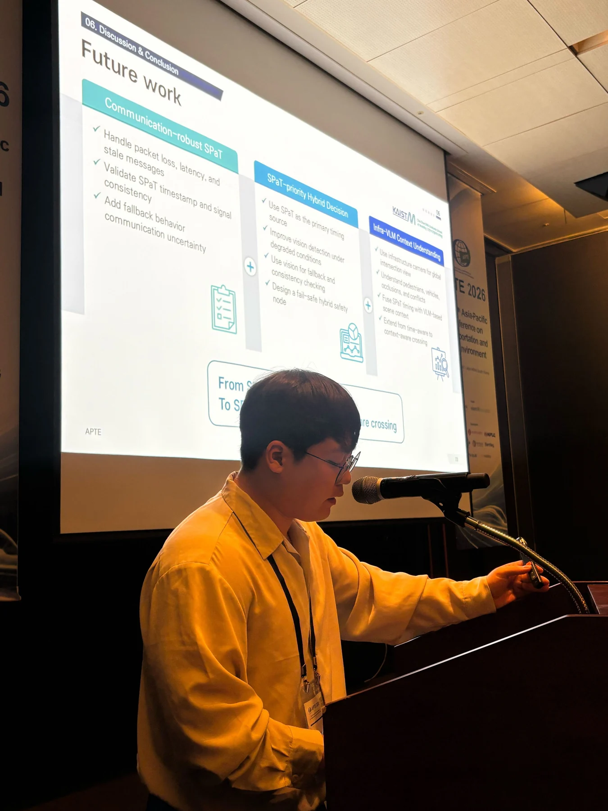
Presented SPaT-Driven Robust Crosswalk Navigation for Autonomous Mobile Robots at APTE 2026 in Jeju. The photograph shows a session at the conference.
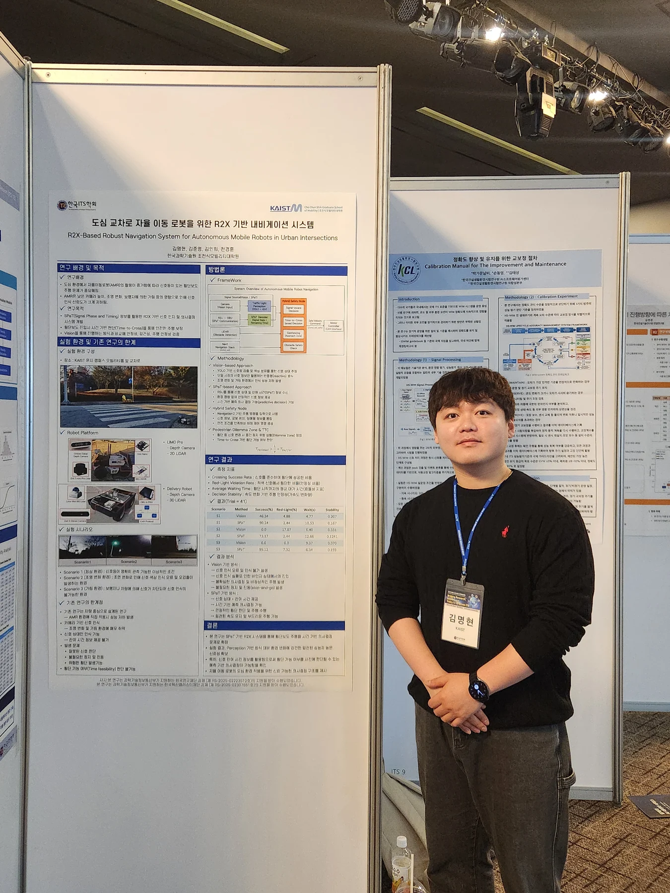
Shared a research prototype connecting infrastructure signal information with autonomous mobile robot navigation at the Korean ITS Spring Conference.
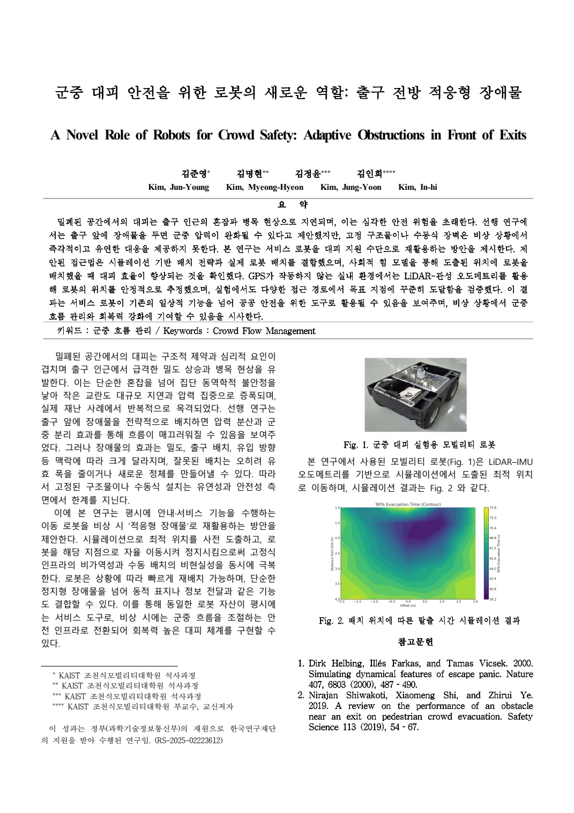
Co-authored a conference contribution on reusing mobile robots to manage crowd flow in front of exits at the KSMI Fall Conference.
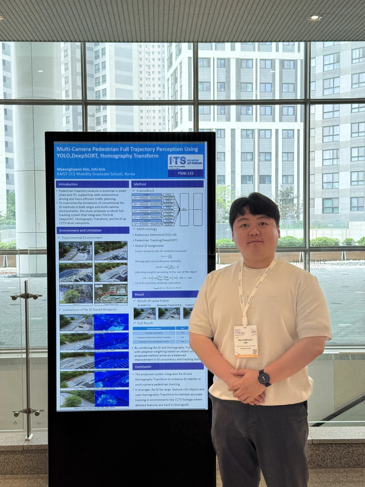
Presented multi-camera pedestrian trajectory perception using YOLO, DeepSORT and homography at the 2025 Suwon ITS Asia-Pacific Forum.
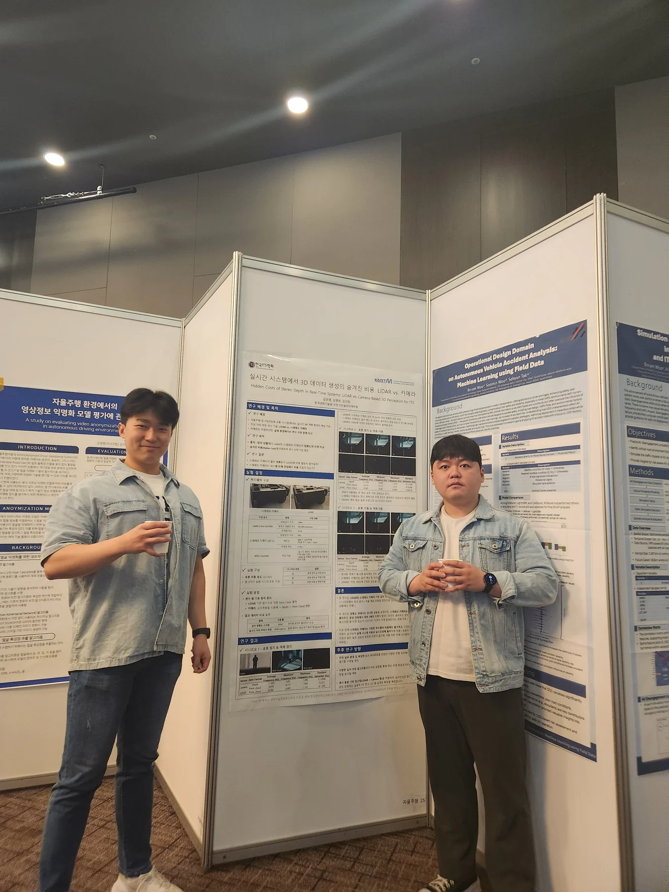
Shared work on pedestrian trajectory perception and co-authored research comparing LiDAR and camera-based 3D perception.
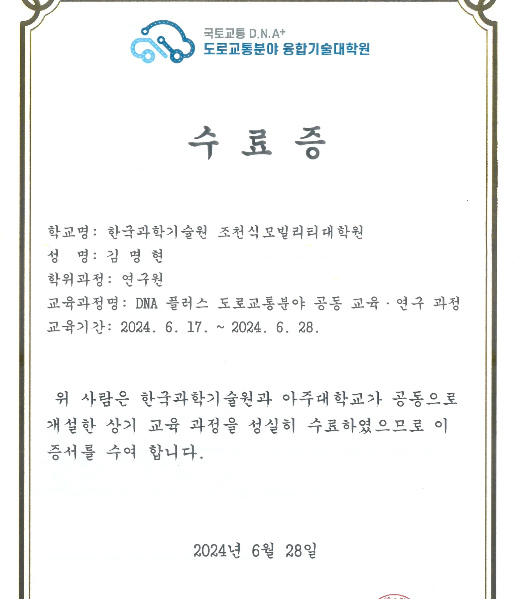
Completed the road transportation convergence program jointly offered by KAIST and Ajou University.
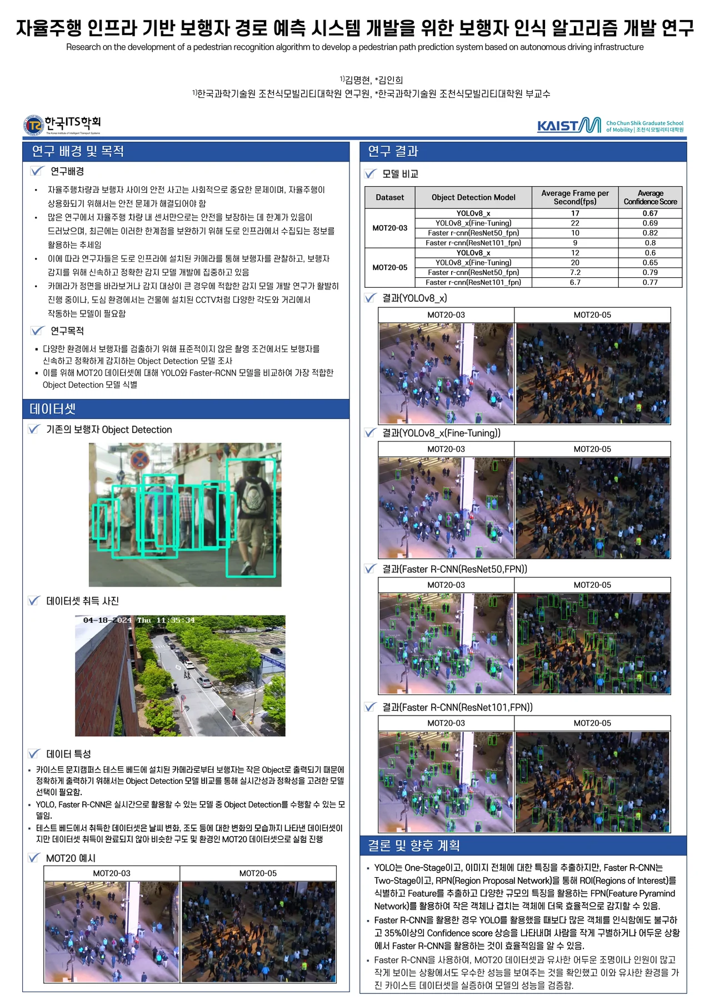
Contributed research on pedestrian recognition for infrastructure-based path prediction at the 2024 Korean ITS Spring Conference.
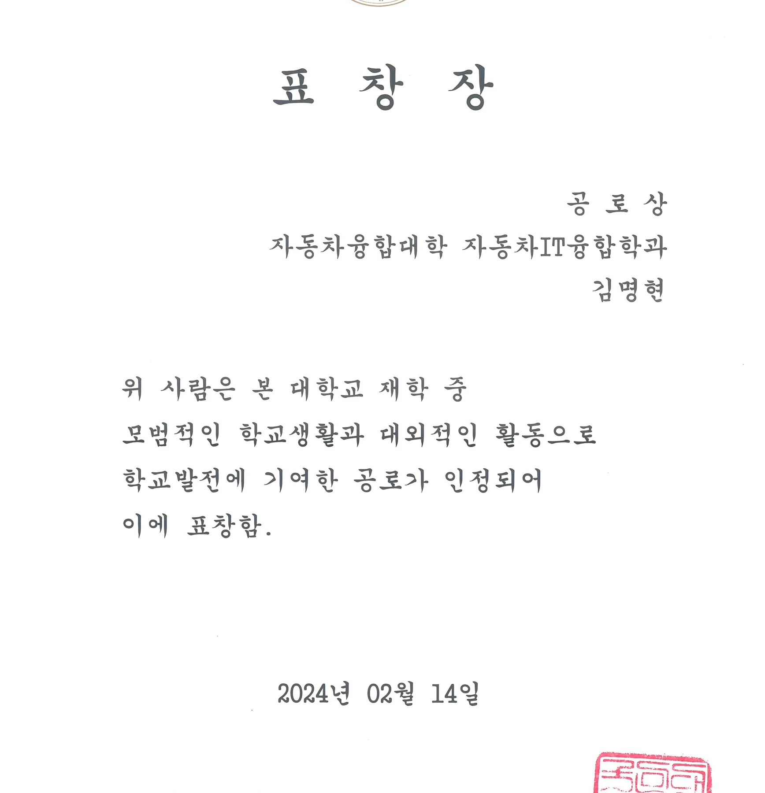
Received a commendation from Kookmin University for contributions through university life and external activities.
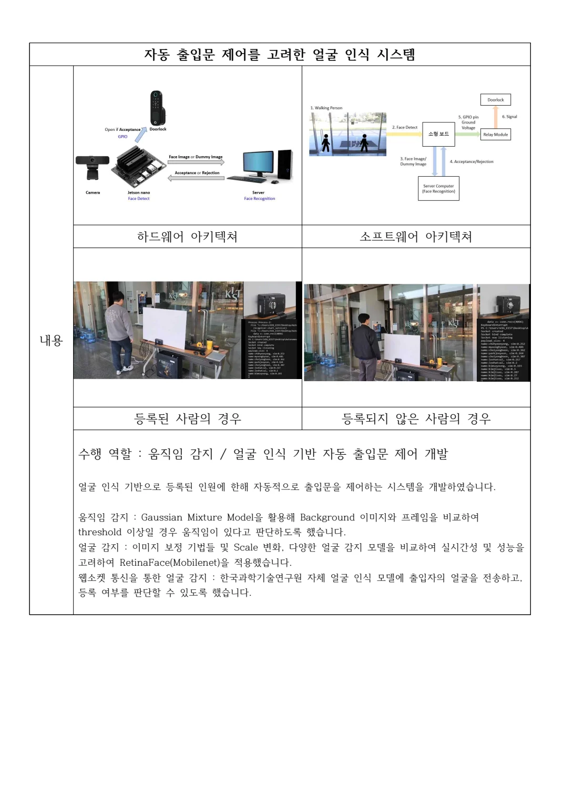
Completed a credit-linked internship working on motion detection, face recognition and automatic access control.
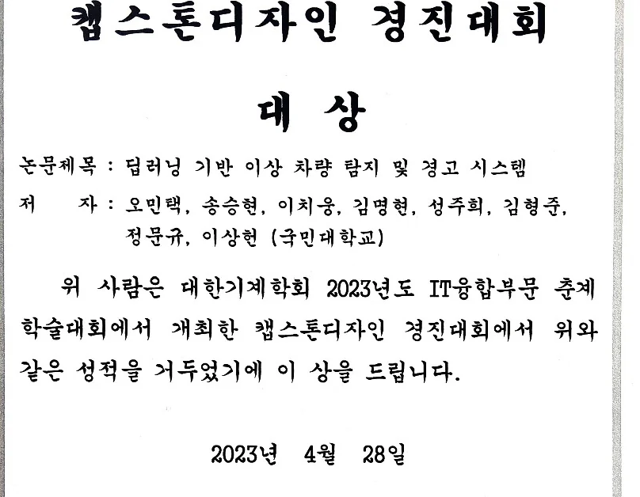
Our team received the KSME IT Convergence Capstone Design Grand Prize for a deep learning-based abnormal vehicle detection and warning system.
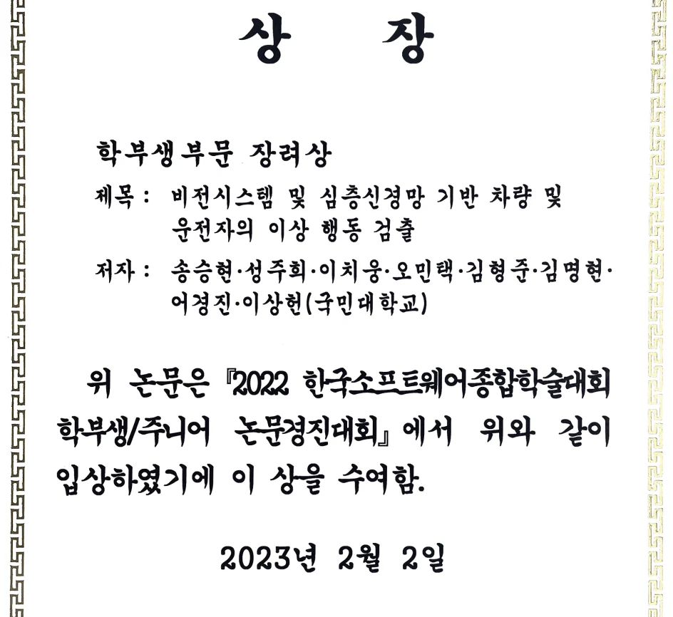
Received an Encouragement Award for research on abnormal vehicle and driver behaviors. The work was contributed to KSC 2022; the certificate is dated February 2023.
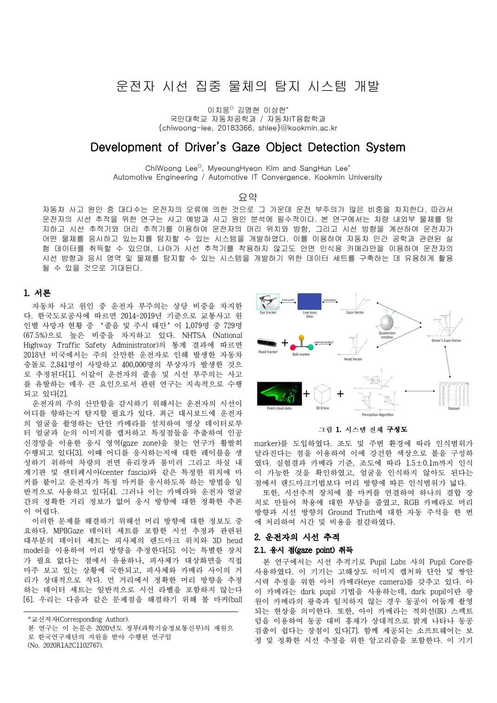
Co-authored conference papers on driver gaze object detection and vision-based detection of abnormal vehicle and driver behaviors.
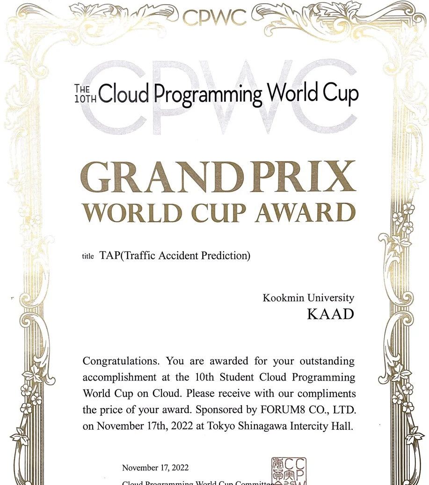
Our Kookmin University team received the Grand Prix World Cup Award at the 10th Cloud Programming World Cup for the Traffic Accident Prediction project.
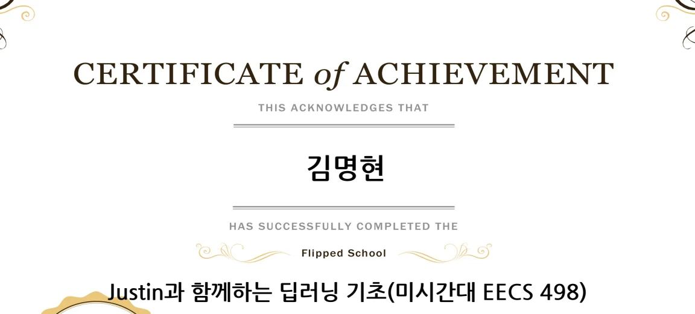
Completed Justin’s deep learning fundamentals course based on Michigan EECS 498.